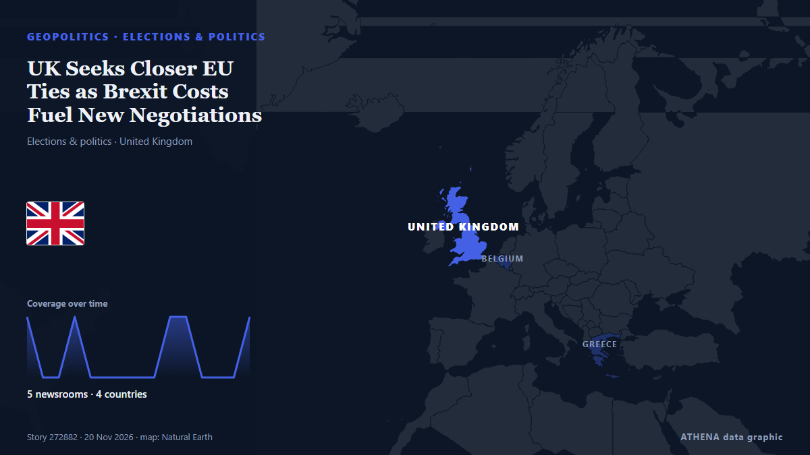

Élections et politique
SponsoriséPrésenté par  Cybernetics and Artificial Intelligence Lab Welcome to the Cybernetics and Artificial Intelligence Laboratory, established at the Department of Business Administration of the National and Kapodistrian University of Athens. The lab is headed by Professor Dimitrios Thomakos. The lab aims to do research that can be published in top venues. Our research uses tools and methods of Artificial Intelligence, and lies in the following areas: - Forecasting - Decision making - Cyber security - Finance We are always looking forward to collaborating with exceptional students!
Cybernetics and Artificial Intelligence Lab Welcome to the Cybernetics and Artificial Intelligence Laboratory, established at the Department of Business Administration of the National and Kapodistrian University of Athens. The lab is headed by Professor Dimitrios Thomakos. The lab aims to do research that can be published in top venues. Our research uses tools and methods of Artificial Intelligence, and lies in the following areas: - Forecasting - Decision making - Cyber security - Finance We are always looking forward to collaborating with exceptional students!
| 7 nov. | 0 |
|---|---|
| 8 nov. | 0 |
| 9 nov. | 0 |
| 10 nov. | 1 |
| 11 nov. | 0 |
| 12 nov. | 1 |
| 13 nov. | 1 |
| 14 nov. | 2 |
| 15 nov. | 0 |
| 16 nov. | 3 |
| 17 nov. | 1 |
| 18 nov. | 4 |
| 19 nov. | 5 |
| 20 nov. | 2 |
Les titres sont affichés en anglais, tels que publiés.

UK Seeks Closer EU Ties as Brexit Costs Fuel New Negotiations
Britain and the EU seek agreements on trade, energy, industry and youth mobility at a Brussels summit, with a projected £8.9 billion annual boost to the UK economy. de Greek City Times
El Salvador's Bukele to run for third presidential term
Last year, the Central American nation amended its constitution to abolish presidential term limits and allow Bukele, in power since 2019, to seek reelection indefinitely. de Le Monde (English)
PM Pashinyan: Preliminary draft of Armenia's new constitution will publicized next week
The preliminary draft of Armenia's new constitution will be made public next week, Prime Minister Nikol Pashinyan announced at Thursday’s Cabinet meeting of the Armenian government. de NEWS.am (English)
Van Hollen backs populism in challenge to Schumer
Closed-door secret-ballot vote to take place next month as El-Sayed, Sanders rally behind Van Hollen. de Express Tribune
Trump says no rush on Iran decision, looks to next year
US President Donald Trump on Thursday appeared to push a decision on renewed major strikes against… de BusinessWorld
Tashima says no plan 'at this point' to step aside in FIFA election race
Kozo Tashima said he had no immediate plans to withdraw from the Fifa presidential race, despite European backing for Philippe Diallo as the stronger challenger to Gianni Infantino. de Free Malaysia Today
Musk feels ‘pretty foolish’ over spending on Republicans
NEW YORK: Elon Musk said on Wednesday he felt “pretty foolish” about the amount of money he spent on this year’s US midterm elections after Republicans suffered sweeping losses. de Dawn
Serbia elects academic as parliament speaker
Among his first tasks will be calling a snap presidential election. de Euractiv
Trump pushes decision on new Iran strikes into next year: ‘We’ve got time’
Trump had previously suggested Iran would be more willing to make a deal after the US midterms, which Republicans lost. de The Jerusalem Post
Mary Peltola wins in Alaska, securing 56-44 US Senate majority for Democrats
It's nine Senate seats flipped by the Democrats, most since 1958. de Times of India (World)
Brazil's Senate approves Lula's $10 billion fiscal package after costly election spending
Brazil’s Senate approved on Wednesday a plan by President Luiz Inácio Lula da Silva to control his government’s spending and increase revenues after his reelection late October. de ABC News (International)
With US midterms underway, courts rebuff Trump's pressure on state election officials
Nov 3 - In the hours before polls opened for the US midterm elections on Tuesday, federal judges issued a series of rulings restricting the Trump administration's unprecedented efforts to pressure… de The Straits Times
UAE candidate says her 'bridge builder' skills make her the woman to lead UN
Lana Nusseibeh, the Emirati candidate vying to become the next UN secretary general, told AFP she believes she is a "bridge builder" who can effect a positive change at a crucial time for the… de Al-Monitor
Who is Hakeem Jeffries, the Democrat nominated to become the first Black US House Speaker
Poised to become the next Democratic House speaker, Jeffries has shifted from unconditional support for Israel to calls for change, but remains vague about what that means as progressives press him… de Haaretz (English)
Pawpaw Takes Swipe At Politicians Dancing At Campaign Rallies
The Nollywood actor urged candidates to focus their campaigns on achievements, policy proposals and plans for good governance. de Premium Times
Japan PM Takaichi, China's Xi shake hands for 2nd time during APEC
The Japanese government is sounding out the United States on a meeting between Prime Minister Sanae Takaichi and President Donald Tru. de Mainichi (English)
Israeli opposition elects Matan Kahana as new Knesset speaker
The parliament was sworn in on 10 November without a new government, after a deadlocked 27 October general election stripped Netanyahu of his majority. de The New Arab
Mary Peltola flips Republican Senate seat in Alaska
Former Rep. Mary Peltola, a Democrat, is projected to win the race for Senate in Alaska, defeating GOP incumbent Sen. de The Hill
Spain's government to raise minimum wage 5.3% as election looms
MADRID, Nov 16 - Spain's government plans to increase the minimum wage by 5.3% from next year, Labour Minister Yolanda Diaz said on Monday, marking the ninth raise under the Socialist-led… de The Straits Times